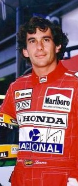
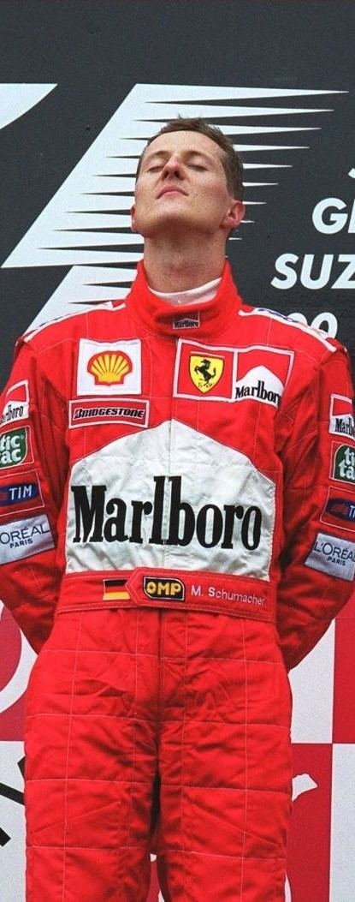

埃尔顿·塞纳
埃尔顿·塞纳（葡萄牙语：Ayrton Senna da Silva），1960年3月21日出生于巴西圣保罗，巴西职业赛车手。
塞纳4岁开始开卡丁车，13岁开始参加卡丁车赛，1984加入一级方程式杜尔曼车队开始了自己的F1生涯，曾于1988年、1990年、1991年三度夺取F1世界冠军。
1994年5月1日，塞纳在圣马力诺大奖赛上意外丧生，年仅34岁。
“如果死亡降临，那就让它突如其来、无法抗拒、彻彻底底，我可不愿在一架轮椅里残度余生。”——埃尔顿·塞纳
在那个平均每年有2位F1车手丧生的年代，塞纳的这句话似乎表明了他在赛车这件事上早已将生死置之度外，而上天仿佛也给了这位传奇车手“最好的安排”。1994年5月1日14点18分，随着伊莫拉（IMOLA）赛道上的一声巨响，34岁的埃尔顿·塞纳结束了他传奇且短暂的一生，留给世人无限唏嘘。
有些人说死亡才能造就传奇，但对于塞纳来说，死亡是宿命，十年的F1生涯已经塑造了他的传奇。而他被称为车神的原因不仅仅是因为三座F1总冠军奖杯和无数的荣耀花环，他对于赛车那种纯粹的热爱以及甘愿献出一切的忠诚，或许才是25年后人们仍然铭记他的原因。
迈克尔·舒马赫
迈克尔·舒马赫（Michael Schumacher），1969年1月3日出生于许尔特，德国一级方程式赛车车手，现代最伟大的F1车手之一。在他头16年的职业生涯中，几乎刷新了每一项纪录，总共赢得7次总冠军，亦曾是唯一赢得总冠军的德国车手（后被德国车手塞巴斯蒂安·维特尔于2010年刷新）。 2006年，迈克尔·舒马赫宣布退役。 2010年初，舒马赫正式宣布复出，加盟前身为布朗车队的梅赛德斯车队。2012年10月4日，舒马赫在铃鹿再次宣布退役。 2013年12月29日，舒马赫在法国阿尔卑斯山区滑雪时发生事故，头部撞到岩石，严重受创。 2018年12月，在遭遇滑雪事故五年后，车王舒马赫从昏迷中苏醒。目前语言交流尚存在困难，但情况已经有了非常大的改观，已经无需通过插管维持生命。2019年9月12日，七届F1年度车手总冠军得主迈克尔·舒马赫在前往巴黎某医院接受干细胞治疗后，现已“神志清醒”。 超越普罗斯特和范吉奥的记录显示了他有多么出众的才能。毫无疑问，舒马赫是所有年代里最好的车手。范吉奥、劳达、塞纳和普罗斯特当然都是伟大的车手，但是舒马赫拥有更多：非常强烈的获胜欲望。